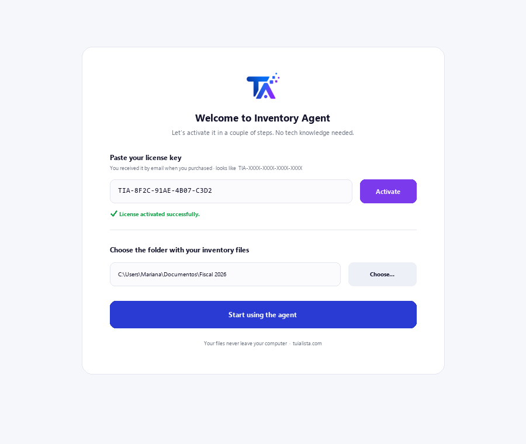
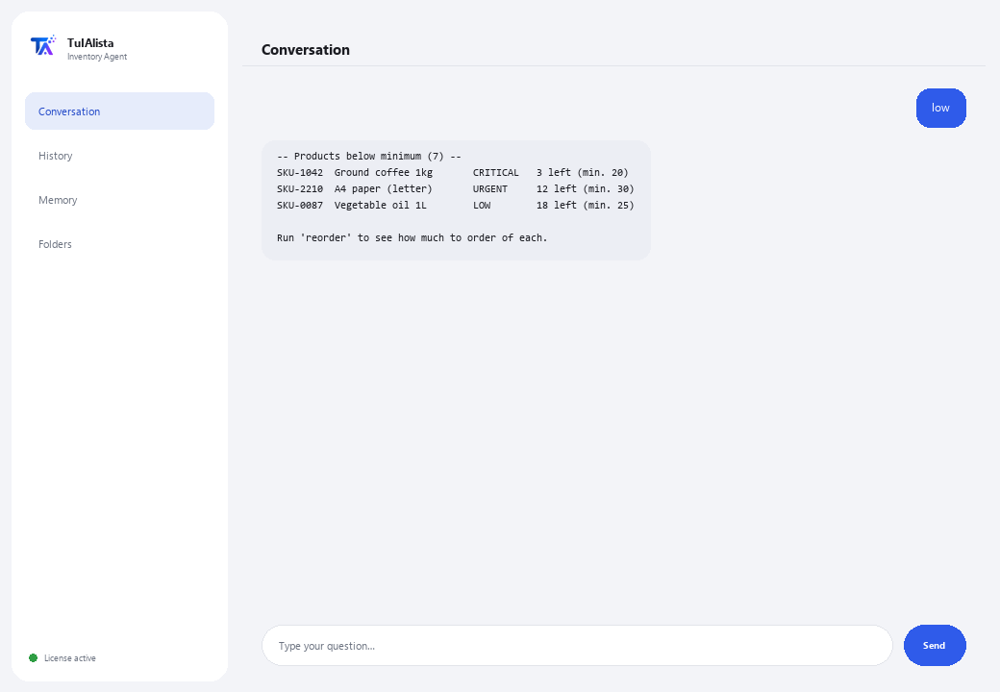

Inventory Agent
Find out what to reorder, how much your inventory is worth, and where your capital is tied up — in seconds.
What does it solve and what do you need?
Inventory is a balancing act: run short and you lose sales; overstock and you tie up cash. Checking this by hand in spreadsheets is tedious and almost nobody does it on time. This agent turns your inventory files into a purchasing and capital control panel.
- You need: your license key (TIA-XXXX-XXXX-XXXX-XXXX) and the folder with your inventory files (Excel or CSV). No Python, no technical knowledge.
- First result in under 5 minutes: install, activate, pick your folder, and run low to see which product is about to run out.
- Your business data never leaves your computer — the analysis runs locally.
soporte@tuialista.com or visit tuialista.com/soporte — we usually reply the same business day.1 What this agent does
You point it at the folder with your inventory files and it:
- Reads them (Excel .xlsx and CSV), automatically recognizing the columns (in Spanish or English).
- Detects products below minimum stock and their urgency.
- Suggests how much to reorder for each product (based on its turnover, or a default value).
- Calculates the total value of inventory, at cost and at selling price, by category and vendor.
- Identifies dead stock (no movement) that ties up capital.
- Classifies products with ABC analysis (where the value is concentrated).
- Detects excess inventory.
- Answers your questions: “what should I reorder first?”
The result: you know what to buy, what to free up, and where your money is, in seconds.
2 Installation (2 minutes)
For Windows. No constant internet connection needed, and nothing gets uploaded to the cloud.
Download the installer from tuialista.com/descargar (Inventory agent) and open it. It creates a desktop shortcut with the logo — no Python or terminal needed.
Double-click the new icon. Paste your license key (you received it by email when you bought it) and click Activate. You'll see a green checkmark once it's valid.
Select the folder with your inventory files and click Start using the agent. Next time it starts right up — it remembers your key and your folder.

3 How to use it
The agent opens a chat window, like a messaging app — not a programmer's black screen. You type your command or question in the text box below, hit Send (or Enter), and the reply appears as a message, just like in this real image:

The commands below are the words you can type in that same text box:
> low [threshold]Products with stock at or below their minimum (or the threshold you give), sorted by urgency (CRITICAL / URGENT / LOW) with estimated days left if there's turnover data. E.g.: low 5.
> reorderFor each low product, suggests how much to order (based on ~30-day turnover, or a default value) and estimates the cost.
> valueTotal value at cost and at selling price, potential margin, and breakdown by category and vendor.
> dead [days]Products with stock but no movement in the last N days (90 by default), sorted by locked-up value. E.g.: dead 120.
> abcA/B/C (Pareto) classification by inventory value: the “A” group concentrates most of the value and deserves the most attention.
> excessProducts with stock well above their minimum and the capital tied up in that excess.
> free-form question?Type any question in natural language, e.g.: which beverage-category products are about to run out?
> exitEnds the session (exit also works).
Want to see all 20 full recipes with a real example of each? Check the Recipe catalog — a separate document because it's long: catalogo_recetas.pdf next to this manual, or the interactive version at tuialista.com/guia/inventario/recetas.
4 Common use examples
This week's purchase
low → reorder — you see what's missing and how much to order, with the estimated cost.
Free up trapped cash
dead 90 → excess — you find the capital locked up in products with no movement or in excess.
Focus your attention
abc — you know which “A” products to watch more closely because they concentrate the value.
A quick question
what's the total value of my inventory at cost?
5 Frequently asked questions
Does my data get uploaded to the internet?
What formats does it accept?
Do I need to name my columns exactly?
Does it really “predict” when to reorder?
Do I need the turnover or last-sale-date column?
What language does it reply in?
Does it modify my files?
Can I change the data folder?
Are the calculations exact?
Can it read several files?
6 Troubleshooting
It says “CSV/XLSX with no recognized columns”
It won't load a .xlsx
It says “Invalid license” or asks to reconnect
“No AI providers configured”
None of these fixed your problem? Write to us directly — we'll gladly look into it with you.
soporte@tuialista.com or visit tuialista.com/soporte — we usually reply the same business day.7 Privacy and confidentiality
Your business data never leaves your computer.
- The agent reads and analyzes your files locally, on your own machine. It doesn't upload them to any server.
- All calculations (low stock, value, ABC, excess, dead stock) happen on your machine.
- The only thing that travels over the internet is: (1) a check that your license is active — which doesn't include your data —, and (2) when you ask a free-form question, a relevant inventory summary is sent to the AI engine to draft the reply.